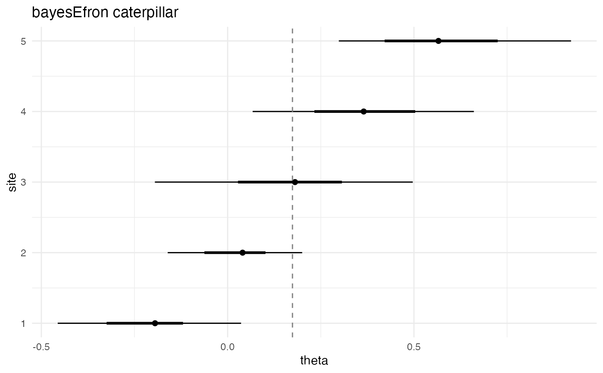
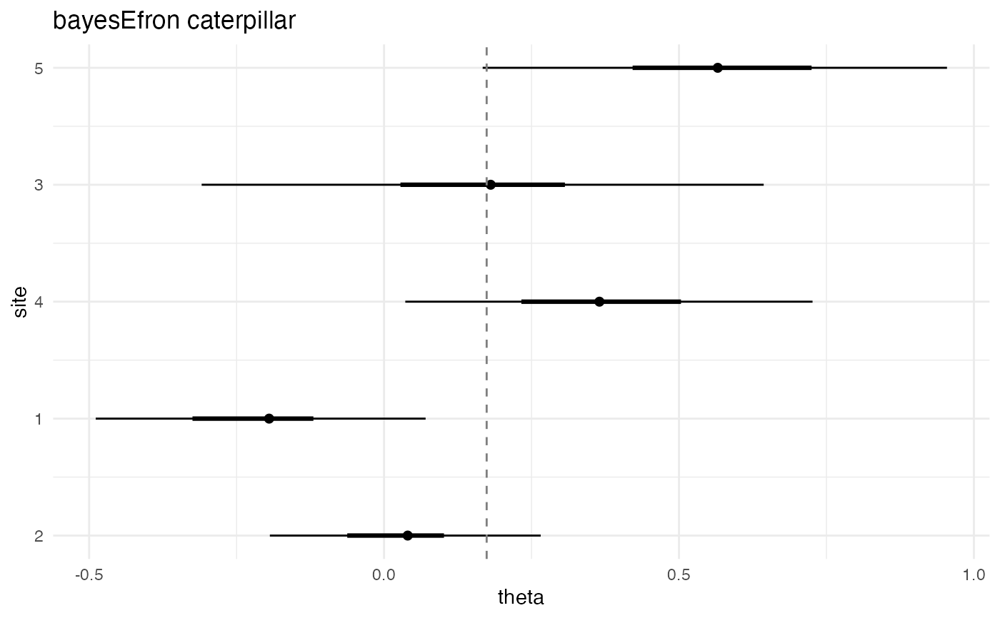
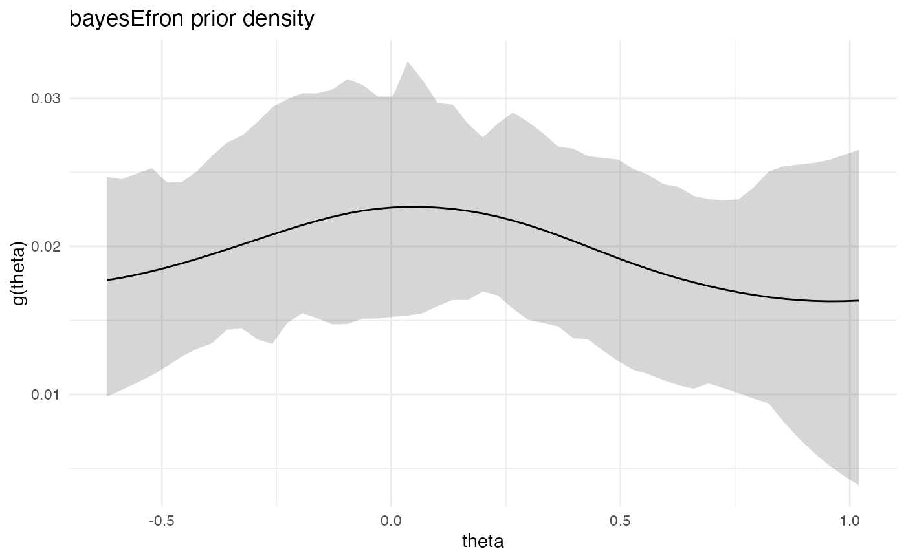
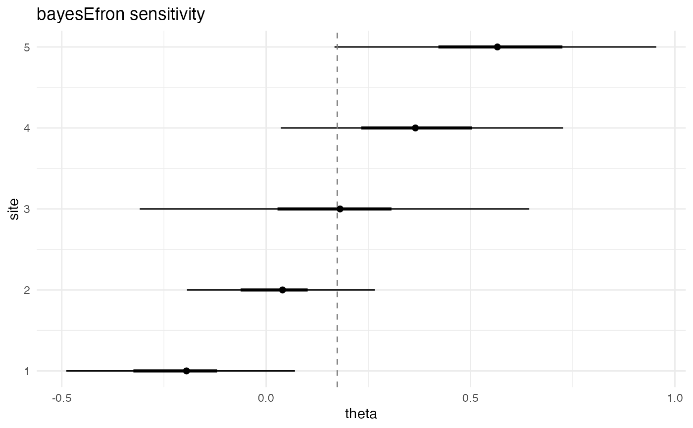
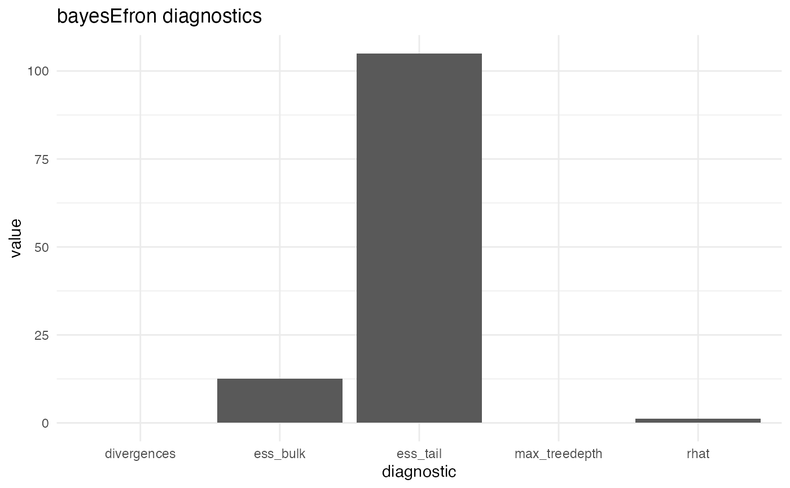
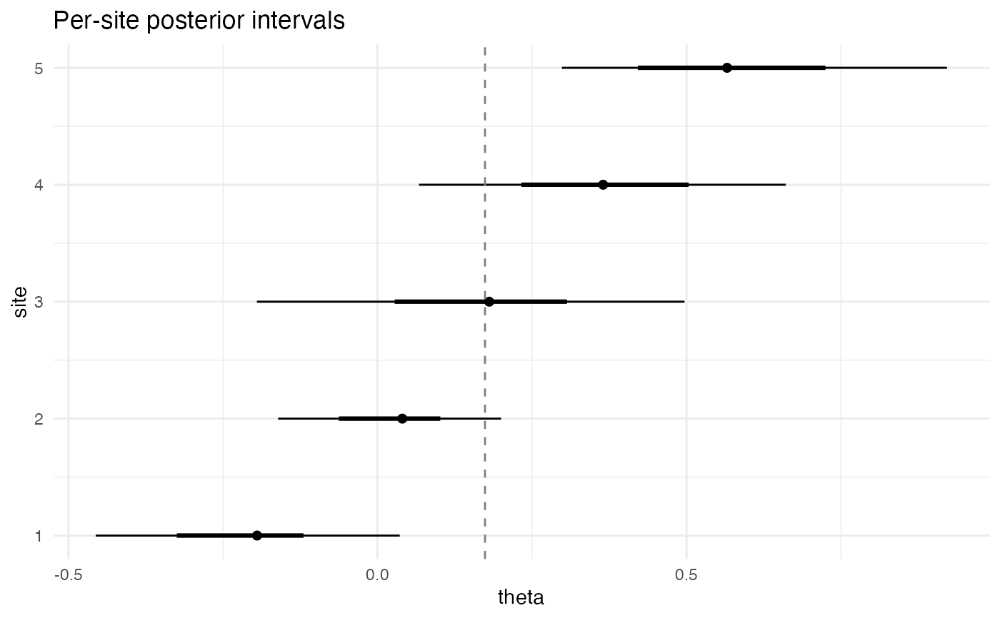

Draw one of four diagnostic-or-summary views of a fitted
bef_fit_re object. The four views support visual answers to the
four most common questions a meta-analyst asks of a deconvolution
fit: where do the per-site effects sit (caterpillar), what does
the underlying mixing distribution look like (prior summary), how
sensitive are the per-site intervals to alternative credible
levels (sensitivity), and is the sampler healthy (diagnostic).
Both ggplot2 and base-graphics backends are available. The
ggplot2 backend is used when the package is installed and the
environment variable BAYESEFRON_NO_GGPLOT2 is not exactly "1";
otherwise the base backend is used.
Arguments
- x
A
bef_fit_reobject returned bybayes_efron_fit().- type
Plot type. One of
"caterpillar"(default),"g","sensitivity", or"diagnostic".- level
Numeric credible level in \((0, 1)\). Defaults to
0.9.- sort_by
Caterpillar ordering. One of
"mean"(default),"sigma", or"none". Ignored by"g"and"diagnostic"views.- ...
Reserved for future expansion; must be empty in v0.1.
Value
Backend-dependent:
ggplot2 backend (
ggplot2installed andBAYESEFRON_NO_GGPLOT2 != "1"): returns aggplot2::ggplotobject visibly so it can be assigned and extended.Base backend: draws on the active graphics device and returns
invisible(NULL).
Plot types
type | Shows | Notes |
"caterpillar" | Per-site posterior means with credible intervals. The intervals are at the requested level. | Use sort_by = "mean" (default) to order by point estimate, "sigma" to order by within-study uncertainty, or "none" to keep input order. |
"g" | Posterior summary of the mixing distribution \(g\): posterior mean ± credible band over the discrete grid. | Reads mean_g_summary and var_g_summary from fit$metadata; reads sd_g_summary from the sd_g_summary attribute when available. |
"sensitivity" | Caterpillar overlay at the requested level against the default 90% intervals. | Useful for checking interval-width sensitivity to level. |
"diagnostic" | Sampler-diagnostic summary view: rhat, ess_bulk, ess_tail, divergences, max-treedepth flags. | Reads from fit$metadata's diagnostic attribute. Pairs with diagnose(). |
Backend selection
By default, the function returns a ggplot2::ggplot object when
ggplot2 is available, allowing downstream + theme(...) and
+ labs(...) chaining. Setting BAYESEFRON_NO_GGPLOT2=1 in the
environment forces the base-graphics path, which writes to the
active graphics device and returns invisible(NULL).
Code that needs to chain ggplot2 layers should guard against the
base path with inherits(p, "ggplot") before applying + theme()
or + labs() (see the @examples block).
See also
bayes_efron_fit()for producing the fit.diagnose()for a structured (non-graphical) diagnostic producer that pairs withtype = "diagnostic".confint.bef_fit_re() for the numeric intervals shown in the caterpillar view.
Examples
# Load the cached five-site smoke fit shipped with the package.
fit <- readRDS(system.file(
"examples", "cached_fit_re_smoke.rds",
package = "bayesEfron"
))
# \donttest{
plot(fit, type = "caterpillar")

plot(fit, type = "caterpillar", sort_by = "sigma", level = 0.95)

plot(fit, type = "g")

plot(fit, type = "sensitivity", level = 0.95)

plot(fit, type = "diagnostic")

# Chain ggplot2 layers when the ggplot2 backend is active.
p <- plot(fit, type = "caterpillar")
if (inherits(p, "ggplot") && requireNamespace("ggplot2", quietly = TRUE)) {
p + ggplot2::theme_minimal() +
ggplot2::labs(title = "Per-site posterior intervals")
}

# }